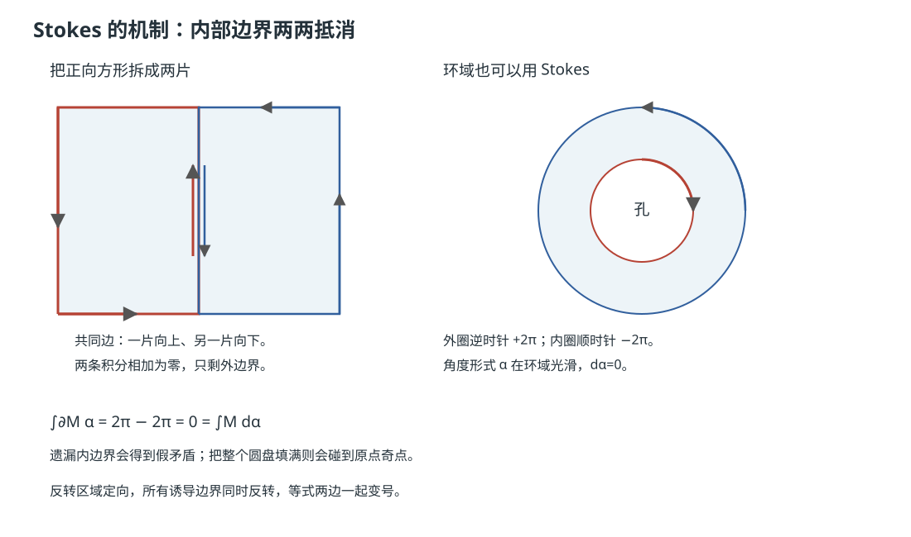

本页目录
流形几何 II · 微分形式与 Stokes 定理
对标：Lee Smooth Manifolds §14–16 ｜ 前置：mfld-01、数分 VI、高代 VI（多重线性） 在弯曲空间上积分的正确对象不是函数而是微分形式——自带"定向的体积元"的多重线性对象。本页搭起外代数 → 外微分 → 积分的三级机器，顶点是广义 Stokes 定理：数分 VI 三大公式（Green/Gauss/Stokes）原来是同一行字的三个方言。

学习层：边界账本会不会被坐标和方向骗倒？
1. 具体实例：同一条边界，换参数化会怎样？
取单位方形 \(Q=[0,1]^2\)，先看 \(\omega=x\,dy\)。若边界按逆时针走，逐段线积分给出
而 \(d\omega=dx\wedge dy\)，所以方形内部的面积积分也是 \(1\)。现在把单位方形用
变形成一个仍然正则的四边形。你预计 \(\Phi^*\omega\) 是什么？若把 \(v\) 反向，两个积分会不会只改一边的符号？实验台会先把数值账本藏起来，等你完成预测再揭示。
2. 先预测：把四个“方向”问题分开
在打开实验结果前，先回答：
- 对正向方形和变形方形参数化，边界线积分与内部面积积分应当相等、相反，还是没有一般关系？
- 把参数域的 orientation 反过来时，边界的诱导定向是否也反过来？你预计两个积分各自如何变号？
- 对穿过原点的角度形式 \(\alpha=(x\,dy-y\,dx)/(x^2+y^2)\)，有限网格算出 \(d\alpha\) 很小，能否因此断言 \(\alpha\) 恰当？
3. 正式桥：pullback、外微分、定向和 Stokes 各自做什么
对光滑映射 \(\Phi:N\to M\)，pullback（拉回）把形式反向搬回：
第一式是在改变形式的坐标表达，第二式是外微分与拉回可交换；拉回不是 orientation，也不是把积分区域“自动填平”。对二维参数化，Jacobian \(J_\Phi\) 的符号记录 orientation：\(J_\Phi>0\) 保向，\(J_\Phi<0\) 反向。一个定向流形的边界定向由向外法向量在最前约定诱导；因此反转 \(M\) 的 orientation 会同时反转 \(\partial M\) 的诱导定向。
正式的 Stokes 条件是：\(M\) 是带光滑边界的定向 \(n\)-流形，\(\omega\) 是合适的光滑 \((n-1)\)-形式，并且积分有定义，例如 \(M\) 紧致，或形式具有紧支集。此时
实验的有限网格只是在固定参数化和固定步长下近似两边，不能替代这个定理的光滑性、紧支性、定向和边界条件。
4. 动手揭示：看 pullback 的两边是否逐项对账
先在下方选择对象、网格和形式系数，再提交三个预测；点击“揭示结果”后，实验才显示真实 SVG、pullback 表达式、边界线积分、面积积分和网格误差。重置会恢复正向单位方形和隐藏账本。
无 JavaScript 时的静态后备：默认形式为 \(\omega=cx\,dy\)，取 \(c=1\)。正向单位方形的参数化是 \(\Phi(u,v)=(u,v)\)，因此 \(\Phi^*\omega=u\,dv\)，\(d(\Phi^*\omega)=du\wedge dv\)，且两边的精确值都是 \(1\)。正则变形方形参数化 \(\Phi(u,v)=\left(u,\left(1-u/2\right)v\right)\) 给出
两边的精确值都是 \(3/4\)。反向方形 \(\Phi(u,v)=(u,1-v)\) 的两边都为 \(-1\)。角度形式在去掉原点的区域上满足 \(d\alpha=0\)，但绕原点一周的线积分是 \(2\pi\)，所以它是闭而不恰当的局部证据。
5. 定理边界：数值相等不替代结构结论
- 网格线积分和面积分接近，只是当前离散近似的数值证据；加密网格也不能单独证明 \(d^2=0\)、Stokes 或一个全局拓扑命题。
- \(d^2=0\) 是光滑外微分的逐点恒等式；“闭”是 \(d\omega=0\)，而“恰当”是存在全局 \(\eta\) 使 \(\omega=d\eta\)。闭不自动推出恰当。
- \(\alpha\) 在 \(\mathbb R^2\setminus\{0\}\) 上闭却不恰当，绕孔的非零积分是拓扑障碍；不能因为每个有限小网格的局部残差小，就把这个障碍抹掉。
- 反向参数化改变的是定向和相应的边界定向；pullback 的交换律 \(d\Phi^*=\Phi^*d\) 是另一条结构事实。把两者混成“Jacobian 只是面积缩放”会丢掉符号。
- 若区域有角点、奇点、内部孔洞，或形式在奇点处没有定义，必须重新检查 Stokes 的流形、支集和边界假设；不能直接套用光滑紧致情形。
1. 外代数：反对称的多重线性
\(k\)-形式（一点处）：\(T_pM\) 上的反对称 \(k\)-重线性函数；全体记 \(\Lambda^k(T_p^*M)\)。楔积 \(\wedge\)：反对称化的张量积，\(\alpha\wedge\beta = (-1)^{kl}\beta\wedge\alpha\)（超交换——\(dx\wedge dy = -dy\wedge dx\)，\(dx\wedge dx = 0\)）。
为什么反对称：\(k\)-形式吃 \(k\) 个切向量、吐"它们张成的平行体的（带符号）体积"——体积对换两条边变号、有重边归零，反对称性就是体积的代数性格（行列式的公理化——高代 II 在此认祖归宗：\(n\)-形式作用于 \(n\) 个向量恰是 \(\det\)）。坐标表示：\(\omega = \sum f_{i_1\cdots i_k}\,dx^{i_1}\wedge\cdots\wedge dx^{i_k}\)；\(\dim\Lambda^k = \binom nk\)。
2. 外微分 \(d\)
定理（外微分的存在唯一） 存在唯一算子 \(d: \Omega^k \to \Omega^{k+1}\) 满足：① 0-形式上 \(df\) = 普通微分；② Leibniz（带符号）；③ \(d\circ d = 0\)；④ 线性。坐标公式 \(d(f\,dx^I) = df\wedge dx^I\)。 【骨架】 唯一性：四条性质在坐标上完全确定公式；存在性：验证坐标公式满足四条（\(d^2 = 0\) 归结为混合偏导相等——Clairaut 定理，数分 V——"\(d^2 = 0\) 是偏导可交换的代数化身"）。\(\blacksquare\)
统一性检阅（\(\mathbb{R}^3\) 方言对照表）：
| 形式层级 | \(d\) 的化身 | 向量微积分名 |
|---|---|---|
| 0-形式 \(f\) | \(df\) | 梯度 grad |
| 1-形式 | \(d\) | 旋度 curl |
| 2-形式 | \(d\) | 散度 div |
\(d^2 = 0\) 一行收编两条恒等式：\(\mathrm{curl}\,\mathrm{grad} = 0\)、\(\mathrm{div}\,\mathrm{curl} = 0\)（数分 VI 的"偶然巧合"原来是结构定理）。拉回 \(f^*\omega\)：形式沿光滑映射反向搬运，且 \(f^*d = df^*\)（换元公式的无坐标形态——积分换元的 Jacobi 行列式被楔积自动吞吐）。
3. 定向与积分
定向：图册的转移映射 Jacobi 行列式恒正——"全流形一致的左右手约定"（Möbius 带无定向：拓扑 I 的名角在此当反例）。\(n\)-形式在定向 \(n\)-流形上的积分：单卡内 \(\int\varphi_*\omega\) = 普通多重积分，单位分解（拓扑 II Urysohn 的光滑版【引用】）拼接全局——良定性由换元公式保证（定向保证符号不打架）。
定理（Stokes） 带边定向流形 \(M\)（边界 \(\partial M\) 带诱导定向）、\(\omega\) 为紧支 \((n-1)\)-形式：
【证明骨架】 单位分解把问题局部化到两种模型卡：内部卡（\(\mathbb{R}^n\)：逐项 Fubini + 微积分基本定理，紧支使边界项消失——积分为零 ✓ 两边都零）；边界卡（半空间 \(x^n \geq 0\)：同样计算只剩 \(x^n = 0\) 壁上的一项——恰是 \(\int_{\partial}\omega\)）。整个定理 = 微积分基本定理 + 会计学。\(\blacksquare\)
方言还原：\(M\) = 平面区域 ⇒ Green；\(M\) = 空间曲面 ⇒ 经典 Stokes；\(M\) = 立体 ⇒ Gauss（数分 VI 三大公式各是一行特例）；\(M\) = 区间 ⇒ Newton–Leibniz 本尊。一个公式的世界观："内部的累积变化 = 边界的净流量"——守恒律的数学原型（麦克斯韦方程组的积分形式即四条 Stokes【引用】）。
4. de Rham 上同调（一瞥，通往 at 线）
\(d^2 = 0\) 使"闭形式"（\(d\omega = 0\)）⊇"恰当形式"（\(\omega = d\eta\)）——商空间
度量"闭而不恰当"的形式——探测流形的洞：\(\mathbb{R}^2\setminus\{0\}\) 上的角度形式 \(d\theta = \frac{x\,dy - y\,dx}{x^2+y^2}\) 闭但不恰当（绕原点积分 \(= 2\pi \neq 0\)——若恰当则 Stokes 给零）⇒ \(H^1 \neq 0\)："积分与路径有关"的障碍恰是拓扑的洞（数分 VI"保守场判据要求单连通"的真相大白）。de Rham 定理【引用】：\(H_{dR} \cong\) 奇异上同调——分析（微分形式）与拓扑（at-03 的同调）测出同一组洞：本课程最深的一次会师预告。
5. 练习与要点
例 1（楔积热身） \(\omega = x\,dy\wedge dz + y\,dz\wedge dx + z\,dx\wedge dy\)（\(\mathbb{R}^3\)）：\(d\omega = 3\,dx\wedge dy\wedge dz\)；对单位球用 Stokes：\(\int_{S^2}\omega = 3\mathrm{Vol}(B^3) = 4\pi\)——"面积分 = 三倍体积"一行到账（散度定理方言）。
例 2（\(d\theta\) 亲手验证） 验证 \(d(d\theta) = 0\)（闭）与 \(\oint_{S^1}d\theta = 2\pi\)（不恰当）——四行计算摸到第一个非平凡上同调类；顺答：为何记号 \(d\theta\) 有误导性？（\(\theta\) 不是全局函数——"局部有势、全局无势"正是洞的含义。）
例 3（🔗 归一化流对账） 生成模型中密度变换 \(\log p_x = \log p_z - \log|\det J|\)：本页语言 = 体积形式的拉回 \(f^*(\text{vol})= |\det J|\,\text{vol}\)——"Jacobi 行列式"在流形语言里是拉回作用于 \(n\)-形式的自动产物（概率 II 变量替换公式的最深写法）。\(\blacksquare\)
下一页：给流形装上度量——黎曼度量、联络与测地线："直线"在弯曲世界的正确定义。